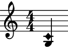
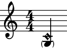
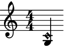

auxjad.ArtificialHarmonic¶
-
class
auxjad.ArtificialHarmonic(*arguments, multiplier: Optional[Union[abjad.utilities.Duration.Duration, Tuple[int, int]]] = None, tag: Optional[abjad.system.Tag.Tag] = None, style: str = 'harmonic', is_parenthesized: bool = False, markup: Optional[str] = None, direction: Union[str, abjad.enums.VerticalAlignment] = 'up')¶ Creates a chord with a tweaked top note head for notating artificial harmonics. This is a child class of
abjad.Chord.- Basic usage:
Usage is similar to
abjad.Chord:>>> harm = auxjad.ArtificialHarmonic("<g c'>4") >>> harm.style 'harmonic' >>> abjad.f(harm) < g \tweak style #'harmonic c' >4
And similarly to
abjad.Chord, pitch and duration can be input in many different ways:>>> harm1 = auxjad.ArtificialHarmonic(r"<g c'>4") >>> harm2 = auxjad.ArtificialHarmonic(["g", "c'"], 1 / 4) >>> harm3 = auxjad.ArtificialHarmonic([-5, 0], 0.25) >>> harm4 = auxjad.ArtificialHarmonic([-5, 0], abjad.Duration(1, 4)) >>> staff = abjad.Staff([harm1, harm2, harm3, harm4]) >>> abjad.f(staff) \new Staff { < g \tweak style #'harmonic c' >4 < g \tweak style #'harmonic c' >4 < g \tweak style #'harmonic c' >4 < g \tweak style #'harmonic c' >4 }

Error
It is important to note that this class can only be initialised with exactly two pitches. Any other number of pitches will raise a
ValueError:>>> auxjad.ArtificialHarmonic(r"<g c' d'>4") ValueError: 'ArtificialHarmonic' requires exactly two 'note_heads' for initialisation
style:When instantiating this class, use the keyword argument
styleto set a different type of note head for the top note, such as'harmonic-mixed':>>> harm = auxjad.ArtificialHarmonic(r"<g c'>4", ... style='harmonic-mixed', ... ) >>> harm.style 'harmonic-mixed' >>> abjad.f(harm) < g \tweak style #'harmonic-mixed c' >4
is_parenthesized:To notate natural harmonics with a parenthesised pitch for the open string at the bottom of the interval, set the keyword
is_parenthesizedtoTrue.>>> harm = auxjad.ArtificialHarmonic(r"<g c'>4", ... is_parenthesized=True, ... ) >>> harm.is_parenthesized True >>> abjad.f(harm) < \parenthesize \tweak ParenthesesItem.font-size #-4 g \tweak style #'harmonic c' >4
multiplier:Similarly to
abjad.Chord, this class can take multipliers:>>> harm = auxjad.ArtificialHarmonic(r"<g c'>4", ... multiplier=(2, 3), ... ) >>> harm.multiplier abjad.Multiplier(2, 3) >>> abjad.f(harm) < g \tweak style #'harmonic c' >4 * 2/3
- Properties:
All properties of
abjad.Chordare also available to be read. This class also includes two new properties namedstyleandis_parenthesized:>>> harm = auxjad.ArtificialHarmonic(r"<g c'>4") >>> harm.written_pitches "g c'" >>> harm.written_duration 1/4 >>> harm.style 'harmonic' >>> harm.is_parenthesized False
All these properties can be set to different values after initialisation:
>>> harm.written_pitches = [-5, 2] >>> harm.written_duration = abjad.Duration(1, 8) >>> harm.style = 'harmonic-mixed' >>> harm.is_parenthesized = True >>> harm.written_pitches "g d'" >>> harm.written_duration 1/8 >>> harm.style 'harmonic-mixed' >>> harm.is_parenthesized True
sounding_pitch()andsounding_note():The methods
sounding_pitch()andsounding_note()return the sounding pitch and sounding note, respectively. Their types areabjad.Pitchandabjad.Note, respectively.>>> harmonics = [ArtificialHarmonic(r"<g b>4"), ... ArtificialHarmonic(r"<g c'>4"), ... ArtificialHarmonic(r"<g d'>4"), ... ArtificialHarmonic(r"<g e'>4"), ... ArtificialHarmonic(r"<g g'>4"), ... ] >>> for harmonic in harmonics: ... print(harmonic.sounding_pitch()) b'' g'' d'' b'' g' >>> for harmonic in harmonics: ... print(harmonic.sounding_note()) b''4 g''4 d''4 b''4 g'4
sounding_note()and indicators:The note created by
sounding_note()inherits all indicators of the artificial harmonic.>>> harm = auxjad.ArtificialHarmonic(r"<g c'>4-.\pp") >>> abjad.f(harm.sounding_note()) g''4 \pp - \staccato

Error
Both
sounding_pitch()andsounding_note()methods raise aValueErrorexception when it cannot calculate the sounding pitch for the given interval.>>> ArtificialHarmonic(r"<g ef'>4").sounding_pitch() ValueError: cannot calculate sounding pitch for given interval >>> ArtificialHarmonic(r"<g ef'>4").sounding_note() ValueError: cannot calculate sounding pitch for given interval
markup:To add a markup expression to the artificial harmonic, use the
markupoptional keyword argument, which takes strings. By default, the markup position is above the harmonic note, but this can be overridden using the keyworddirection, which can take strings as well asabjad.Upandabjad.Down:>>> harm1 = auxjad.ArtificialHarmonic(r"<a d'>1") >>> harm2 = auxjad.ArtificialHarmonic(r"<a d'>1", ... markup='I.', ... ) >>> harm3 = auxjad.ArtificialHarmonic(r"<a d'>1", ... markup='I.', ... direction=abjad.Down) >>> staff = abjad.Staff([harm1, harm2, harm3]) >>> abjad.f(staff) \new Staff { < a \tweak style #'harmonic d' >1 < a \tweak style #'harmonic d' >1 ^ \markup { I. } < a \tweak style #'harmonic d' >1 _ \markup { I. } }

Setting
markuptoNonewill remove the markup from the note.>>> harm = auxjad.ArtificialHarmonic(r"<a d'>1", ... markup='I.', ... ) >>> harm.markup = None >>> abjad.f(harm) < a \tweak style #'harmonic d' >1

Error
If another markup is attached to the harmonic note, trying to set the
markupproperty toNonewill raise anException:>>> harm = auxjad.ArtificialHarmonic(r"<a d'>1") >>> abjad.attach(abjad.Markup('test'), harm) >>> harm.markup = 'I.' >>> harm.markup = None Exception: multiple indicators attached to client.
Methods
__init__(*arguments[, multiplier, tag, …])Initialises self.
__repr__()Gets interpreter representation.
Returns the sounding note of the harmonic as an
abjad.Note.Returns the sounding pitch of the harmonic as an
abjad.Pitch.Attributes
The direction of the harmonic note head.
Whether the bottom note head is parenthesised or not.
The markup of the harmonic note head.
Gets multiplier.
Gets note-heads in chord.
The style of the upper note head.
Gets component tag.
Gets and sets written duration of chord.
The written pitches of the two note heads.
-
__init__(*arguments, multiplier: Optional[Union[abjad.utilities.Duration.Duration, Tuple[int, int]]] = None, tag: Optional[abjad.system.Tag.Tag] = None, style: str = 'harmonic', is_parenthesized: bool = False, markup: Optional[str] = None, direction: Union[str, abjad.enums.VerticalAlignment] = 'up')¶ Initialises self.
-
property
direction¶ The direction of the harmonic note head.
-
property
is_parenthesized¶ Whether the bottom note head is parenthesised or not.
-
property
markup¶ The markup of the harmonic note head.
-
property
multiplier¶ Gets multiplier.
-
property
note_heads¶ Gets note-heads in chord.
Gets note-heads in chord:
>>> chord = abjad.Chord("<g' c'' e''>4") >>> abjad.show(chord)
>>> abjad.f(chord.note_heads) abjad.NoteHeadList( [ abjad.NoteHead( written_pitch=abjad.NamedPitch("g'"), ), abjad.NoteHead( written_pitch=abjad.NamedPitch("c''"), ), abjad.NoteHead( written_pitch=abjad.NamedPitch("e''"), ), ] )
Sets note-heads with pitch names:
>>> chord = abjad.Chord("<g' c'' e''>4") >>> abjad.show(chord)
>>> chord.note_heads = "c' d' fs'" >>> abjad.show(chord)
Sets note-heads with pitch numbers:
>>> chord = abjad.Chord("<g' c'' e''>4") >>> abjad.show(chord)
>>> chord.note_heads = [16, 17, 19] >>> abjad.show(chord)
Set note-heads with any iterable.
Returns note-head list.
-
sounding_note() → abjad.core.Note.Note¶ Returns the sounding note of the harmonic as an
abjad.Note.
-
sounding_pitch() → abjad.pitch.Pitch.Pitch¶ Returns the sounding pitch of the harmonic as an
abjad.Pitch.
-
property
style¶ The style of the upper note head.
-
property
tag¶ Gets component tag.
-
property
written_duration¶ Gets and sets written duration of chord.
Get written duration:
>>> chord = abjad.Chord("<e' cs'' f''>4") >>> abjad.show(chord)
>>> chord.written_duration Duration(1, 4)
Set written duration:
>>> chord = abjad.Chord("<e' cs'' f''>4") >>> abjad.show(chord)
>>> chord.written_duration = abjad.Duration(1, 16) >>> abjad.show(chord)
-
property
written_pitches¶ The written pitches of the two note heads.